分屏工具tmux
总结
- 新建会话
- tmux
- tmux new -s session_name
- 列出所有会话
- 进入会话
- tmux attach -t session_name
- 切换会话
- tmux switch -t session_name
- 退出会话
- 删除会话
- tmux kill-session -t session_name
- 会话改名
- tmux rename-session -t old new
- 当前会话改名
- 会话管理器
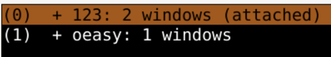
- 每个session后面有个
1 windows是什么意思?🤔
windows 窗口
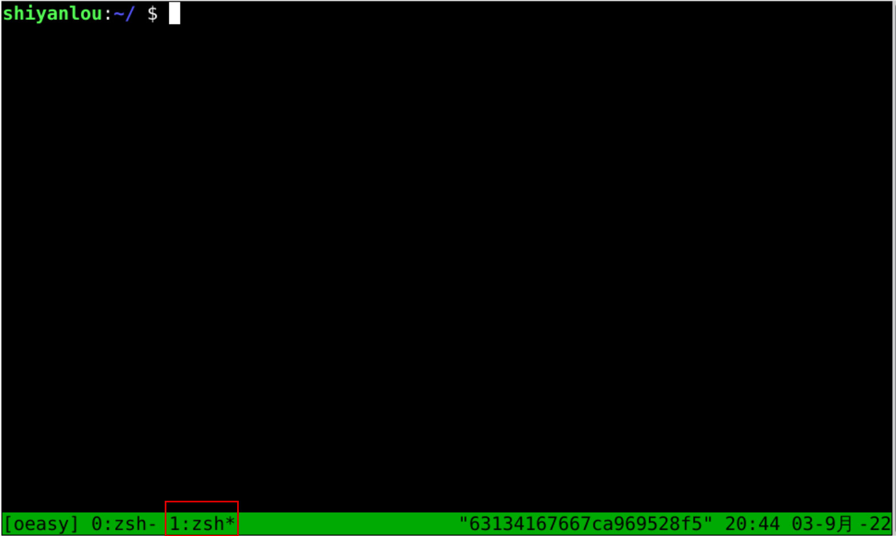
会话管理器
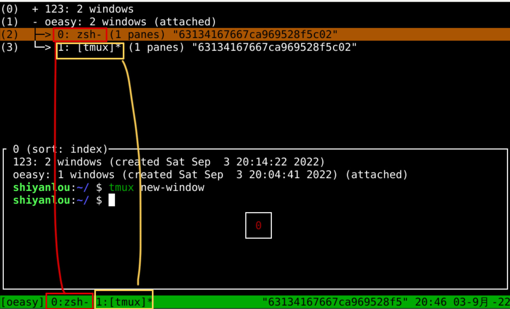
- 可以用方向键和回车选中会话中的窗口(window)
- 一个窗口对应下方绿条上的一个标签页
- 当前窗口后面有个星号*
- 会话(session)和窗口(window)之间有什么关系呢？
tmux结构
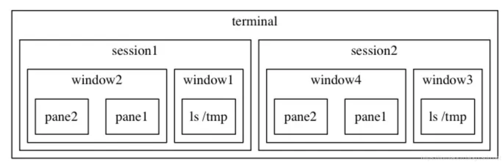
切换windows
- 用会话管理器切换
- ctrl+b s
- s对应session
- 所有窗口默认关闭
- 可以用方向键切换
- 用窗口管理器切换
- ctrl+b w
- w代表window
- 所有窗口默认打开
- 列出当前session所有window
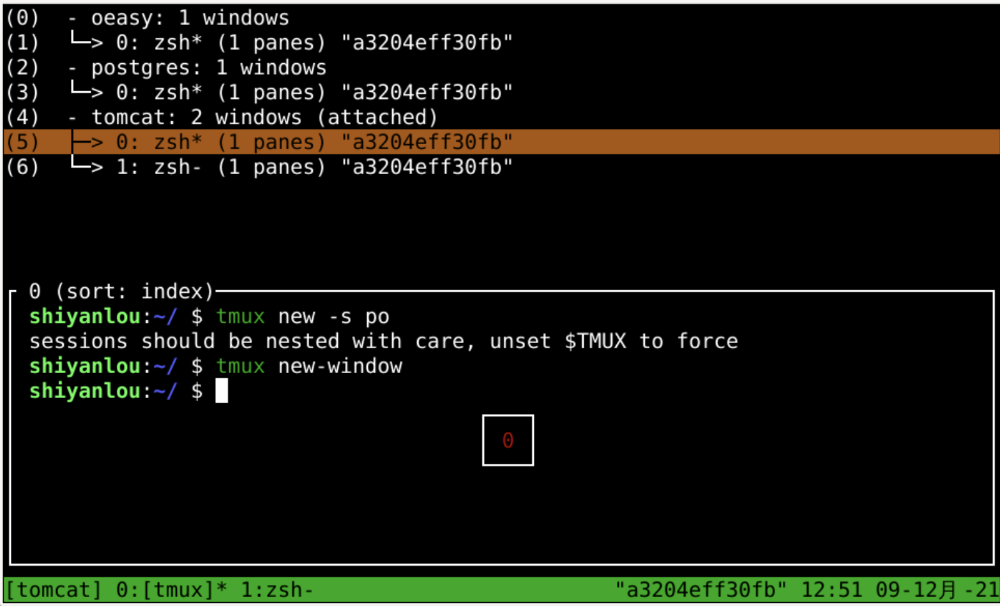
- 选择
- 命令方式
- 不过还是比较复杂的
- window的增删改名可以用快捷键么？
window相关快捷键
- ctrl+b c
- 意思是create
- 创建一个新window窗口
- 状态栏会显示多个窗口的信息
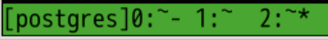
- ctrl+b p
- 切换到上一个窗口（按照状态栏上的顺序）previous
- ctrl+b n
- ctrl+b 数字
- tmux之后，窗口内的东西就不能向上翻着看了
- 怎么办？
向上翻页
删除窗口
- 思路
- ctrl+b &
- 删除窗口应该和删除会话一样
- 只不过这次不是kill-session
- 而是kill-window
- 试试
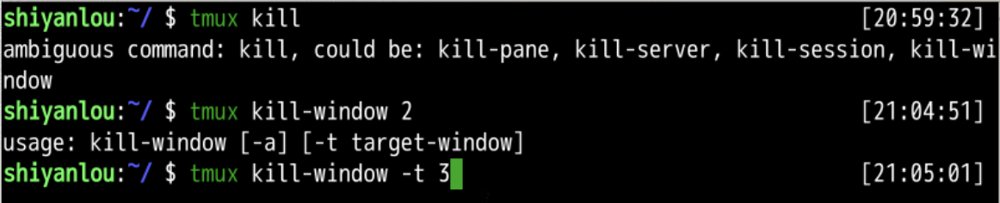
- 删除session和window的方式都是kill
- 那session和window的改名方式都是rename么？
窗口改名
- 改名可以按为先删除再重建的方式完成
- 不过有没有直接改名的方式呢
- tmux rename-window -t 3 o3z
- 试试
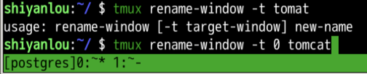
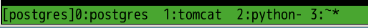
- ctrl+b ,
- 可以修改当前窗口的名字
- 给窗口一个记得住的名字很重要
- 既然有了session为什么又要有window呢？
- 这不是重复了么？
session和window之间的区别
- ctrl+b s
- 可以列出当前的用户的所有session
- 还可以展开
- 我们有的时候需要连好几个服务器
- 这就需要两个sessions吗？
- 其实不用我们只要同一个session中开两个window
- 然后分别ssh到指定的服务器就可以了
- 同一个服务器也可以开不同的window
- 上面进行不同的操作
- postgresql
- python
- tomcat
- minecraft server
- 那为什么有session呢？
- session我理解就是工作区 workspace
- 可以把工作的环境保留下来
- 这一个session是干这套活的
- 那一个session是干那套活的
- 这样就可以通过切换session进行任务的切换
- 不过这个tmux始终在服务运行着
- 还是比较占用资源的
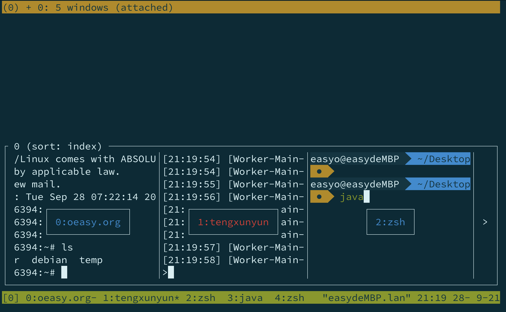
总结
- 新建窗口
- tmux new-window -n window_name
- 切换窗口
- 关闭当前窗口
- ctrl+b &
- tmux kill-session -t session_name
- 会话窗口
- tmux rename-session -t old new
- ctrl+b $
- 窗口管理器
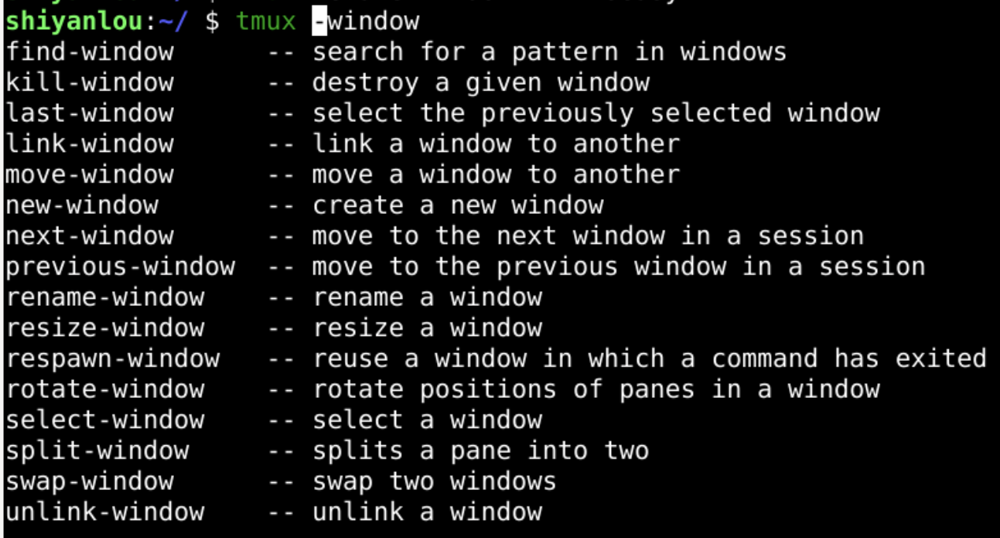